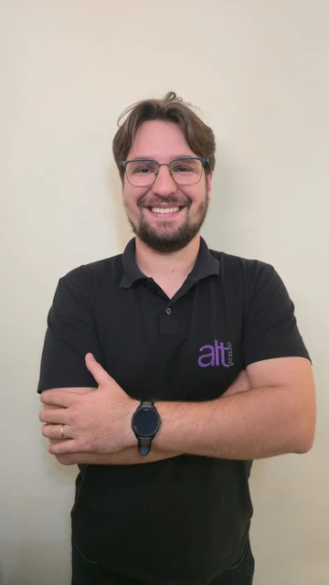
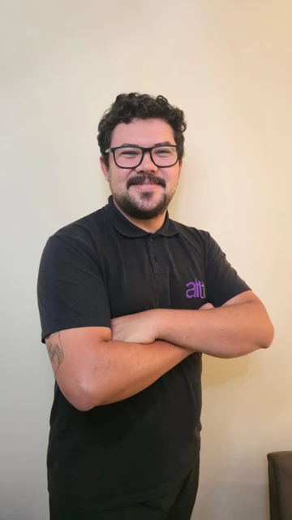

Gestão financeira
transparente
Prestação de contas clara para acompanhar despesas e planejar os próximos passos do condomínio.
SANTA MARIA · RS
Pessoas, conhecimento e soluções para cuidar do seu condomínio.
O QUE FAZEMOS
Da organização das contas à convivência entre moradores, cada detalhe merece atenção.
Prestação de contas clara para acompanhar despesas e planejar os próximos passos do condomínio.
Acompanhamento administrativo e operacional para apoiar o síndico nas decisões e nas rotinas do condomínio.
Planejamento de melhorias com foco no conforto, na segurança e na valorização dos espaços.
Escuta atenta e acompanhamento das demandas de cada condomínio.
Mais comodidade para participar das discussões e decisões da comunidade.
Mediação e diálogo para ajudar a construir uma convivência mais equilibrada.
A HISTÓRIA POR TRÁS DA ALT
A Alt nasceu em Santa Maria para modernizar a administração condominial. Nosso nome vem da tecla Alt: é em combinação com outras teclas que ela cria novas possibilidades.
Na gestão, acreditamos nessa mesma força. Síndico, conselho, moradores, administradora e prestadores trabalhando juntos para organizar, resolver e evoluir.
Converse com a AltNOSSA FILOSOFIA · OS 3 R’S
Um caminho de gestão que respeita as prioridades e a realidade financeira de cada condomínio.
Organização do CNPJ, convenção, regimento interno, PPCI e acompanhamento de itens como extintores, equipamentos de segurança e caixa-d’água.
Um cronograma de melhorias construído com o síndico e o conselho, considerando as necessidades, as prioridades e os recursos disponíveis.
Análise de contratos, fornecedores e despesas. Busca de oportunidades de negociação e de alternativas de eficiência, como energia solar e reaproveitamento de água.
CONDOMÍNIOS QUE FAZEM PARTE DA NOSSA HISTÓRIA
condomínios em Santa Maria
Carteira apresentada em setembro de 2026
132 apartamentos
160 apartamentos
24 apartamentos
60 apartamentos
QUEM CUIDA DA GESTÃO
Conhecimento técnico e proximidade para acompanhar síndicos e moradores.
Acompanhe a Alt no Instagram
Formado em Direito pela FADISMA e em Gestão de Tecnologia da Informação. Mais de cinco anos de experiência em gestão condominial.

Responsável pelo financeiro, pelas rotinas administrativas e pelo suporte aos condomínios.
ADMINISTRAÇÃO NO DIA A DIA
Acesse pelo app ou pela web para receber boletos, acompanhar balancetes, solicitar serviços e enviar chamados.
Acessar a plataformaDIFERENCIAIS DA ALT
A administração inclui apoio às rotinas abaixo sem honorários administrativos extras.
Papelaria e materiais de rotina sem cobrança adicional.
Apoio na organização de assembleias e nos procedimentos cartoriais.
Acompanhamento na abertura de CNPJ e em grandes demandas, como a pintura do condomínio.
Emissão junto aos boletos das unidades, sem honorários adicionais.
VAMOS CONVERSAR
Conte o que você precisa. Vamos abrir sua mensagem no WhatsApp para você enviar à nossa equipe.
(55) 99101-6243 administrativo@altgestaodecondominios.comAlameda Santiago do Chile, 115, sala 502
Bairro Dores · Santa Maria, RS
Segunda a sexta: 9h–12h e 14h–18h
Sábado: atendimento com agendamento
DÚVIDAS FREQUENTES
Use o formulário acima ou entre em contato pelo WhatsApp. Informe o nome do condomínio e suas necessidades para iniciar o atendimento.
A opção “Área do cliente” abre a plataforma uCondo. Utilize suas credenciais de acesso. Se precisar de ajuda, entre em contato com a Alt.
Sim. Nosso endereço e horários estão na seção de contato. Para combinar seu atendimento, fale com a equipe pelo WhatsApp.